Справка по JS85cEMU
Меню
Неофициальное руководство для шифратора "АНКРИПТ"
(Электроника МК-85С)
HTML вариант, версия 1.2
PDF вариант
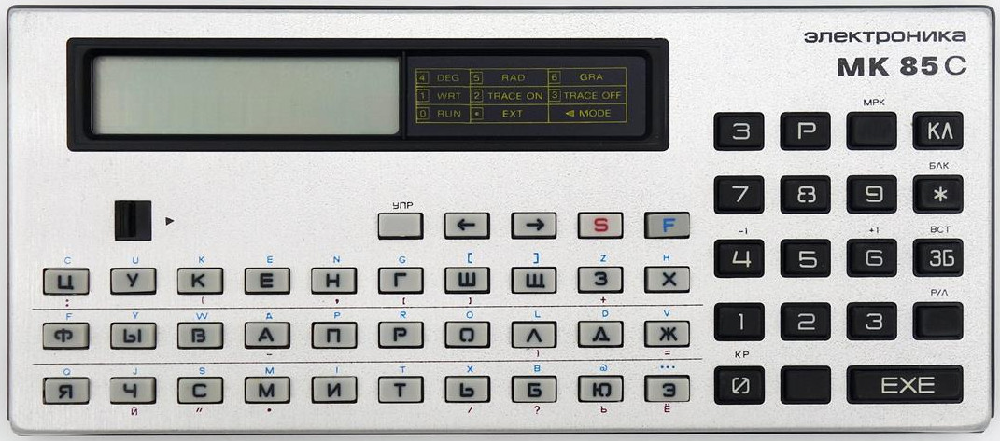

2024 © Bs0Dd, MaFrance351, rpocc, xff, kaseiiro
Содержание
- Начало работы
- Включение шифратора
- Обозначение специальных клавиш
- Функции клавиш с модификатором УПР
- Цветные подписи к клавишам
- Обозначение сегментов на дисплее
- Режим шифрования данных
- Режим расшифровки данных
- Режим замены долговременного ключа
- Коррекция искажений при расшифровке
- Сведения о устройстве
Ссылки:
Начало работы
- Включить МК. «?» сигнализирует о необходимости инициализации ОЗУ.
- Нажать тонким (не проводящим ток) предметом кнопку «начальная
установка». Будет произведено тестирование ЦПУ, ПЗУ, ОЗУ и дисплея.
| 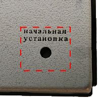 |  |
 |
- Далее система предложит проверить клавиатуру. Можно нажимать на различные клавиши для проверки их работоспособности.
Для окончания теста нужно нажать (последовательно) клавиши УПР + EXE.
- Шифратор отобразит приветственный экран. Для начала настройки необходимо ввести (не отображается на экране) кодовое слово «АЗИМУТ».
- Система произведет краткий тест и отобразит контрольную сумму ПЗУ.
Для всех известных (на момент составления руководства) устройств она равна 04367402034 (код микросхемы ПЗУ — 061).
Клавиша Н запустит повторный тест, клавиша Д начнет процедуру настройки.
- Система попросит задать пароль длиной 5 символов. Запомните его, чтобы в дальнейшем иметь возможность разблокировать шифратор!
Пароль подтверждается комбинацией клавиш УПР + EXE.
 | 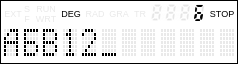 |
- Теперь в систему требуется ввести ДКЛ (долговременный ключ), представляющий из себя последовательность 110 цифр (разбитых на 22 блока по 5 цифр).
Два последних блока (10 символов) являются контрольной суммой ключа (защита от ошибок при вводе).
Такие ключи поставлялись в комплекте с устройством, либо же генерировались (утерянной) программой на IBM PC.
На данный момент ключ можно cгенерировать в этом эмуляторе, используя программу
DKLKM85C или утилиту для Python от kaseiiro.
Подтверждение ввода — УПР + EXE. В качестве примера приведен вот такой ключ:
84534 45986 35465 64750 69746 75562 96281 96471 16889 77629 94879
96394 73073 45415 29900 39356 54944 10712 85757 23266 32131 18232
| 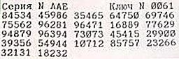 |
 | 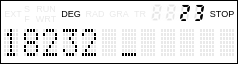 |
- Система предложит выбрать тип данных, которые в дальнейшем будут шифроваться (можно поменять только при вводе нового ключа).
Это может быть как Буквенно-цифровая информация, так и исключительно Цифровая (цифры будут отображаться с разделением по блокам).
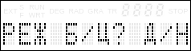
- Теперь нужно указать длину групп, на которые будут делиться числа. Это могут быть группы от 2 до 5 цифр в каждой (на экране всегда показываются только 2 группы).
Подтверждение ввода — УПР + EXE.
- Конфигурация шифратора закончена! Теперь можно использовать его для шифровки и расшифровки данных.
Включение шифратора
- Включить МК. На экране отобразится приветствие. Для разблокировки шифратора необходимо ввести пароль (ввод не отображается).
ВНИМАНИЕ! После ввода 25 неправильных символов (счетчик сбрасывается при выключении шифратора) сработает защита от перебора пароля и шифратор уничтожит пользовательские данные в ОЗУ,
затем отобразит приветственный экран настройки. В таком случае необходима повторная настройка устройства, начиная с пункта 4.
- Система произведет краткий тест и отобразит контрольную сумму ПЗУ. Клавиша Н запустит повторный тест, клавиша Д откроет главное меню.
- Теперь устройство можно использовать!
Обозначение специальных клавиш
— клавиша включения режима шифровки («Зашифровать»).

— клавиша включения режима расшифровки («Расшифровать»)

— клавиша включения режима смены ДКЛ («Ключ»).

— клавиша стирания текущего символа (аналог Delete).

— клавиша блокировки ввода (только просмотр с прокруткой).
— клавиша смены раскладки (Русский и Латиница).
— клавиша выработки разового ключа (маркант).
— клавиша прокрутки на 12 символов (или два блока) назад.

— клавиша прокрутки на 12 символов (или два блока) вперед.

— клавиша-модификатор для дополнительных функций (управляющая).
Функции клавиш с модификатором УПР
+

— переход в начало строки.
+

— переход в конец строки.
+
— разблокировка ввода.
+ — вероятно, режим вставки, в прошивке не реализован.
+

— коррекция расшифровки: возврат к вводу шифротекста для правки.
+

— коррекция расшифровки: сдвиг гаммы на 1 разряд назад.
+ — коррекция расшифровки: пропуск 1 разряда шифротекста.
+ — подтверждение ввода данных.
Цветные подписи к клавишам
- Подписи СИНЕГО цвета вводятся при использовании Латинской раскладки.
- Подписи КРАСНОГО цвета вводятся при использовании клавиши УПР.
Обозначение сегментов на дисплее

- EXT — активна Латинская раскладка.
- S — нажат модификатор УПР.
- F — не используется.
- RUN — режим расшифровки текста.
- WRT — режим шифровки текста.
- DEG — режим ввода долговременного ключа.
- RAD — шифрование в буквенно-цифровом режиме.
- GRA — шифрование в цифровом режиме.
- TR — активна блокировка ввода.
- STOP — достигнут лимит ввода символов.
- Семисегментные индикаторы обычно показывают номер текущего символа или блока.
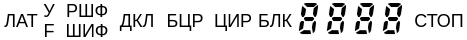
(альтернативный вариант сегментов, согласно их назначению)
Режим шифрования данных
- Для активации режима в главном меню используем клавишу .
Соглашаемся активировать его клавишей Д.
 | 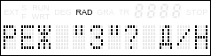 |
- Перед началом процесса шифрования необходимо выработать случайный разовый ключ — маркант. Для этого нужно 10 раз нажать клавишу МРК.
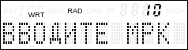
- Теперь необходимо ввести шифруемый текст (или цифры, если используется цифровой режим шифрования).
В качестве примера приведена строка «ШИФРАТОР ANCRIPT». Подтверждаем комбинацией УПР + EXE.
| 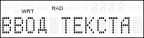 |  |
- Строка шифруется в набор цифр, которые поделены на блоки заданной при настройке длины (вне зависимости от длины блоков на экране всегда отображается только 2 блока).
Полученный шифротекст готов к передаче. Нажатие УПР + EXE возвращает в главное меню.
87809 90512 93160 35334 13316 10843 34233 22345 40949
| 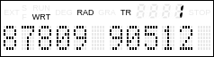 |  |
Режим расшифровки данных
- Для активации режима в главном меню используем клавишу .
Соглашаемся активировать его клавишей Д.
| 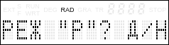 |
- Теперь вводим блоки шифротекста, полученные при шифровке. Подтверждаем ввод по УПР + EXE.
- На экране видна расшифрованная строка. Если при вводе блоков была допущена ошибка и строка расшифровалась некорректно, можно вернуться к вводу шифротекста комбинацией УПР + КР.
Также, можно устранять искажения в шифротексте с помощью комбинаций УПР + -1 и УПР + +1, см. Коррекция искажений при расшифровке.
 | 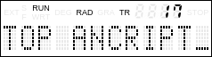 |
- При нажатии на УПР + EXE, перед возвратом в главное меню программа предлагает добавить дополнительные блоки шифротекста.
Основное назначение данной функции — расшифровка большого объема данных. Шифратор за раз может расшифровать меньше информации, чем зашифровать.
Это вызвано необходимостью хранить шифротекст в ОЗУ, чтобы можно было вернуться к его редактированию по УПР + КР, поэтому свободного места для расшифровки меньше.
В случае если шифротекст не умещается в допустимый лимит, нужно расшифровать и сохранить текущие данные, а затем ввести оставшиеся блоки шифротекста, используя функцию добавки.
 | 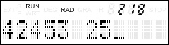 |
Режим замены долговременного ключа
- Для активации режима в главном меню используем клавишу .
Соглашаемся активировать его клавишей Д.
| 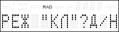 |
- Система попросит задать новый пароль. Вводим и подтверждаем клавишами УПР + EXE.
| 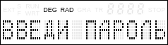 |  |
- Теперь нужно ввести новый ДКЛ. Вводим 110 цифр и подтверждаем клавишами УПР + EXE.
- Задаем режим шифрования (Буквенно-цифровой или Цифровой).
- При надобности можно сменить длину блоков.
- Переконфигурация шифратора закончена!
Коррекция искажений при расшифровке
Примененная здесь система шифрует данные, используя метод гаммирования, когда специально выработанная последовательность (гамма) объединяется с данными.
Такой способ удобен тем, что позволяет производить шифрование и расшифрование одной операцией, объединяя с гаммой исходный текст или шифротекст.
| Гамма |
| 1 | 2 | 3 | 4 | 5 | 6 | 7 | 8 | 9 | ... |
| Данные |
| 1 | 2 | 3 | 4 | 5 | 6 | 7 | 8 | 9 | ... |
Однако, при передаче шифротекста возможно искажение, утрата части данных, либо их дублирование.
Если искажение при расшифровке дает, соответственно, искаженные, но читаемые данные,
то при потере/дублировании всего одного разряда шифротекста происходит разрыв между данными и гаммой, что приводит к невозможности расшифровать оставшиеся данные.
В шифраторе присутствует возможность исправления таких ситуаций. Важно понимать, что первые 10 разрядов (цифр) шифротекста содержат разовый ключ (маркант),
искажение которого сразу приводит к невозможности расшифровки всего шифротекста, коррекция здесь ничем не поможет.
| Гамма |
| 1 | 2 | 3 | 4 | 5 | 6 | 7 | 8 | 9 | ... |
| Данные |
| 1 | 2 | 3 | 4 | 8 | 9 | 10 | 11 | 12 | ... |
|
| Гамма |
| 1 | 2 | 3 | 4 | 5 | 6 | 7 | 8 | 9 | ... |
| Данные |
| 1 | 2 | 3 | 4 | 5 | 4 | 5 | 6 | 7 | ... |
|
Возьмем ранее полученный шифротекст из примера по шифровке:
87809 90512 93160 35334 13316 10843 34233 22345 40949
Как известно, здесь зашифрована строка «ШИФРАТОР ANCRIPT».
Теперь представим, что при передаче были утеряны три цифры шифротекста:
87809 90512 93160 35334 13316 10843 34233 22345 40949
Попробуем ввести имеющийся шифротекст в шифратор:
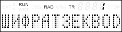
В связи с потерей, текст после 6 буквы оказался полностью нечитаем.
Для коррекции предназначены комбинации клавиш УПР + -1 либо +1. Клавиша -1 сдвигает гамму на 1 разряд назад, клавиша +1 пропускает один разряд данных.
В данном случае, поскольку утеряны 3 цифры, гамму нужно подвинуть на столько же цифр назад.
| Гамма |
| 10 | 11 | 12 | 13 | 14 | 15 | 16 | 17 | 18 | ... |
| Данные |
| 10 | 11 | 12 | 13 | 16 | 17 | 18 | 19 | 20 | ... |
|
| Гамма |
| 10 | 11 | 12 | 13 | 16 | 17 | 18 | 19 | 20 | ... |
| Данные |
| 10 | 11 | 12 | 13 | 16 | 17 | 18 | 19 | 20 | ... |
|
Переместим курсор на позицию, где началось искажение
(в цифровом режиме курсор почему-то перемещается только по блокам, впрочем сама по себе коррекция здесь особо не имеет смысла).
Нажимаем комбинацию УПР + -1 три раза. И действительно, получилась вполне читаемая строка «ШИФРАТ ANCRIPT», в тексте утратились только 2 буквы
(каждый символ в буквенно-цифровом режиме кодируется 2 цифрами).
| 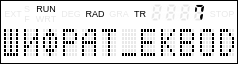 |  |
Теперь представим, что при передаче произошло дублирование 4 цифр:
87809 90512 93160 3530 35334 13316 10843 34233 22345 40949
Уже после 4 буквы расшифровка нарушилась.
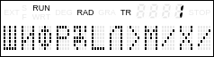
Для нормализации требуется пропустить 4 дублированных разряда:
| Гамма |
| 5 | 6 | 7 | 8 | 9 | 10 | 11 | 12 | 13 | ... |
| Данные |
| 5 | 6 | 7 | 8 | 5 | 6 | 7 | 8 | 9 | ... |
|
| Гамма |
| 5 | 6 | 7 | 8 | 9 | 10 | 11 | 12 | 13 | ... |
| Данные |
| 5 | 6 | 7 | 8 | 9 | 10 | 11 | 12 | 13 | ... |
|
Устанавливаем курсор на позицию и 4 раза нажимаем УПР + +1. Данные полностью расшифрованы.
Сведения о устройстве
- Объем открытого текста: 750 символов или 1500 цифровых знаков
- Объем информации, расшифровываемой за один раз:
- Буквенно-цифровой режим: 535/536* символов
- Цифровой режим: 800/802/803/804** цифры
- Объем информации, зашифрованной на одном долговременном ключе: до 3,000,000 символов
- Долговременный ключ: 10100 вариантов
- Разовый ключ: 1010 вариантов
- Алгоритм шифрования: нелинейный алгоритм высшей сложности «Ангстрем-3»
- Кодировка: подобна КОИ-7, со сдвигом на 32 позиции.
* Для блоков по 2 цифры можно расшифровать на 1 символ больше.
** Для блоков по 5/4/3/2 цифры.
Таблица соотношений символов МК 85С и Unicode
нажмите на символ, чтобы скопировать его
| x0 | x1 | x2 | x3 | x4 | x5 | x6 | x7 | x8 | x9 | xA | xB | xC | xD | xE | xF |
|---|
| 0x | 
|
! | 
" |

# | 
$ |

% | 
& |

' | 
( |

) | 
* |
+ | 
, |

- | 
. |

/ |
|---|
| 1x | 
0 |

1 | 
2 |

3 | 
4 |

5 | 
6 |

7 | 
8 |

9 | 
: |

; | 
< |
= | 
> |

? |
|---|
| 2x |
@ |

A | 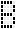
B |

C | 
D |

E | 
F |
G | 
H |
I | 
J |

K |
L |

M | 
N |

O |
|---|
| 3x | 
P |

Q | 
R |

S | 
T |

U | 
V |

W | 
X |

Y |
Z |

[ | 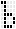
Ъ |

] | 
… |
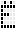
Ё |
|---|
| 4x |
Ю |

А | 
Б |

Ц |
Д |

Е | 
Ф |

Г | 
Х |

И | 
Й |

К | 
Л |

М |
Н |
О |
|---|
| 5x | 
П |

Я | 
Р |

С | 
Т |

У | 
Ж |

В | 
Ь |

Ы | 
З |

Ш | 
Э |
Щ | 
Ч |

█ |
|---|
Символы, отмеченные красным, недоступны для ввода с помощью
клавиатуры шифратора, поэтому способа их физического ввода не существует.
Меню